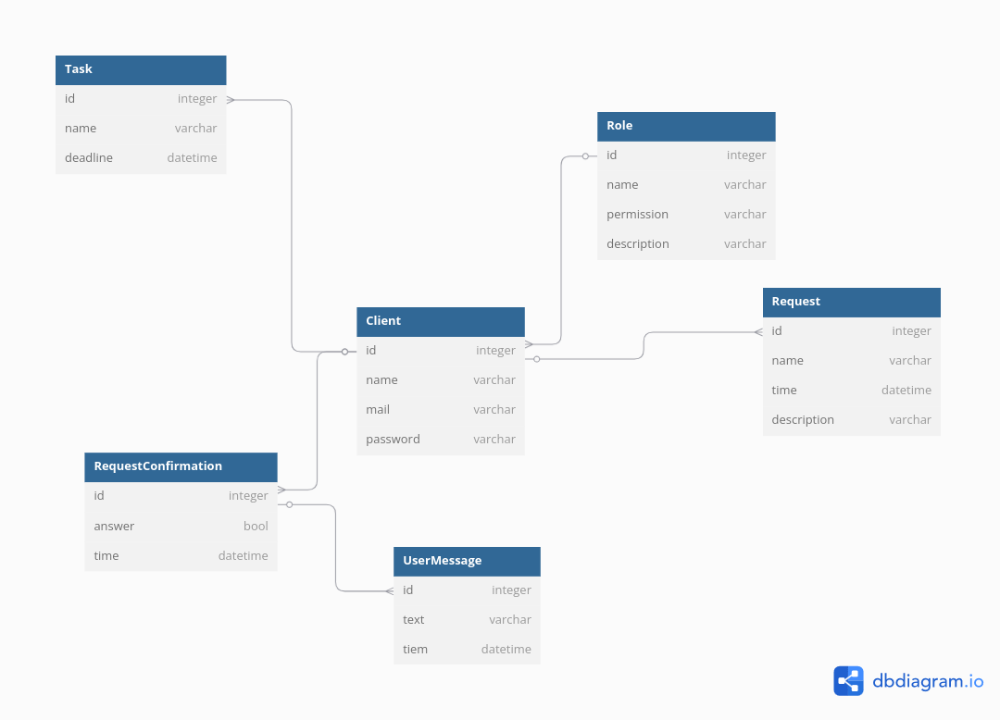

Виконали
студент 2-го курсу, групи ІО-31 Сергій БИКОВЕЦЬ Telegram
студент 2-го курсу, групи ІО-31 Петро УСТИМЧИК Telegram
студент 2-го курсу, групи ІО-31 Данило НАГОРНИЙ Telegram
студентка 2-го курсу, групи ІО-31 Софія РОЗПУТНЯ Telegram
студент 2-го курсу, групи ІО-31 Артем ГАВРИЛЮК Telegram
студент 2-го курсу, групи ІО-31 Денис ГРИГОРЧУК Telegram
студент 2-го курсу, групи ІО-31 Артем РЯБЕЦЬ Telegram
студент 2-го курсу, групи ІО-31 Радислав МИРКІН Telegram
Керівник
доцент кафедри ОТ ФІОТ, к.т.н., доцент Андрій БОЛДАК
НТУУ "КИЇВСЬКИЙ ПОЛІТЕХНІЧНИЙ ІНСТИТУТ імені ІГОРЯ СІКОРСЬКОГО
Факультет інформатики та обчислювальної техніки
Кафедра обчислювальної техніки
Київ
Вступ
Сучасне інформаційне середовище створює нові виклики для бізнесу, політики та громадських організацій, оскільки медіа-контент значною мірою впливає на їхню репутацію, діяльність і стратегічні рішення. Мета цієї роботи полягає у розробці системи, яка дозволить автоматизовано збирати, аналізувати та інтерпретувати різні типи медіа-даних, забезпечуючи глибше розуміння громадської думки та інформаційних тенденцій.
Збільшення обсягів цифрових даних вимагає впровадження сучасних технологій для їх обробки та аналізу. Існуючі системи аналізу медіа-контенту мають обмежену функціональність і часто не підтримують всі типи контенту або не використовують сучасні методи обробки, що може впливати на якість аналізу. Тому необхідно створити універсальний інструмент, здатний забезпечити швидкий і точний аналіз.
Розроблена система буде універсальна та здатна ефективно обробляти різні типи контенту, використовуючи технології для забезпечення точного аналізу. Результати впровадження включають покращення якості аналізу, скорочення часу на прийняття рішень та оптимізацію роботи з інформацією, що позитивно позначиться на різних сферах діяльності.
Розроблення загальних вимог до системи
Аналіз предметної області
Вступ
Системи аналізу медіа-контенту – це технічні інструменти та програмне забезпечення, що використовуються для збору, моніторингу та аналізу інформації з різних медіа-джерел. Ця система дає змогу впорядковувати різні види контенту, глибше розуміти його значення та вплив на аудиторію, визначати тренди й оцінювати громадську думку. У цьому документі представлено огляд ключових понять, пов’язаних із медіа-контентом, а також розглянуто різні методи аналізу та здійснено порівняння наявних рішень.
Основні визначення
Визначення термінів разом з можливими джерелами для їх розуміння:
-
Аналіз медіа-контенту – процес дослідження текстової, аудіо- та візуальної інформації з метою виявлення закономірностей, аналізу тональності, класифікації та виявлення фейкового контенту.
-
Лінгвістичний аналіз – метод дослідження текстів, що включає аналіз ключових слів, семантичний аналіз, визначення тональності (позитивної, негативної, нейтральної) та тематичне моделювання.
-
Комп’ютерний зір – технологія обробки зображень і відео за допомогою штучного інтелекту для розпізнавання об’єктів, облич, сцен та аналізу маніпуляцій (наприклад, DeepFake).
-
Обробка мовлення – аналіз аудіоконтенту, що включає розпізнавання мовлення (Speech-to-Text), ідентифікацію мовця, аналіз емоційного стану та виявлення аудіофейків.
-
Модель YOLO (You Only Look Once) – швидка та точна модель для об’єктного розпізнавання у реальному часі.
-
Модель ResNet (Residual Neural Network) – нейронна мережа для глибокого аналізу зображень, яка використовує залишкові зв’язки для зменшення проблеми градієнтного згасання.
-
Модель DeepFake Detection (XceptionNet, MesoNet) – моделі для виявлення змінених зображень та відео, що аналізують характерні особливості синтетичного контенту.
-
Модель Wav2Vec 2.0 – система розпізнавання мовлення, яка дозволяє ефективно трансформувати аудіосигнал у текст.
-
FakeCatcher – модель для виявлення фейкового відео шляхом аналізу фізіологічних ознак людини.
-
Гібридні нейронні мережі (Hybrid Deep Learning Models) – підхід, що поєднує методи Transformer та CNN для аналізу тексту, зображень та аудіо одночасно.
-
Аналіз фреймів (рамковий аналіз) – метод дослідження медіа-контенту, що виявляє, як саме подається інформація та які наративи формуються.
-
Дискурсивний аналіз – вивчення структури текстів та їхнього впливу на суспільну думку.
-
Обробка великих даних (Data Mining) – автоматизований процес аналізу великих обсягів інформації для виявлення закономірностей та трендів.
-
Text Mining – алгоритмічний аналіз тексту для виявлення ключових тем, частоти слів та аналізу настроїв.
-
Розпізнавання емоцій – технологія визначення емоційного забарвлення контенту на основі аналізу тексту, аудіо та відео.
Підходи та способи вирішення завдання
Моделі
-
Модель YOLO (You Only Look Once): YOLO – це потужна модель для об’єктного розпізнавання у відео та зображеннях у реальному часі. Вона швидко та точно визначає об’єкти, використовуючи єдиний нейромережевий підхід до локалізації та класифікації.
-
Модель ResNet (Residual Neural Network): Глибока згорткова нейронна мережа, яка використовується для класифікації та розпізнавання зображень. Вона вирішує проблему градієнтного згасання за допомогою "залишкових" зв’язків між шарами.
-
Модель DeepFake Detection (XceptionNet, MesoNet): Ці моделі спеціалізуються на виявленні змінених або синтезованих зображень та відео. Вони аналізують особливості глибокофейкових матеріалів та виявляють ознаки маніпуляцій.
-
Модель Wav2Vec 2.0 (Facebook AI): Використовується для розпізнавання мовлення та роботи з аудіофайлами. Завдяки попередньому тренуванню на великих наборах даних вона здатна розпізнавати мову навіть у шумних умовах.
-
Модель FakeCatcher: Використовується для виявлення фейкових відео шляхом аналізу фізіологічних ознак на обличчі людини, що є неможливими для відтворення у зміненому контенті.
-
Гібридні нейронні мережі (Hybrid Deep Learning Models): Поєднують методи Transformer та CNN для багатомодального аналізу медіа-контенту, що дозволяє одночасно аналізувати текст, зображення та аудіо для комплексного розуміння змісту.
Підходи
Підходи до аналізу медіа-контенту можуть змінюватися залежно від цілей дослідження та типу контенту. Основними підходами є:
Лінгвістичний підхід до аналізу медіа-контенту
Цей підхід спрямований на аналіз текстової інформації, представленої у вигляді новин, статей, коментарів у соціальних мережах тощо. Основна увага приділяється розпізнаванню ключових слів, аналізу семантики, виявленню тональності та тематичного моделювання.
Під час аналізу можуть враховуватися різні аспекти, зокрема:
- Аналіз лексичних та граматичних структур тексту, визначення основних тем і концепцій.
- Використання методів класифікації тексту для автоматичного визначення категорій контенту.
- Аналіз тональності для виявлення позитивного, негативного чи нейтрального забарвлення тексту.
- Виявлення фейкових новин за допомогою спеціалізованих алгоритмів машинного навчання. Цей підхід широко застосовується у журналістиці, соціологічних дослідженнях, автоматизованому модеруванні контенту та моніторингу громадської думки.
Візуальний підхід до аналізу медіа-контенту (Комп’ютерний зір)
Цей метод використовує алгоритми машинного навчання для розпізнавання та аналізу зображень і відео. Його застосовують для автоматичного розпізнавання облич, об’єктів, сцен та інших візуальних елементів контенту.
Основні етапи аналізу включають:
- Визначення та ідентифікація облич у фото та відео.
- Виявлення об’єктів та сцен на зображеннях (наприклад, транспортні засоби, будівлі, логотипи).
- Аналіз відео для виявлення фейкового контенту, включаючи технологію DeepFake.
- Оцінка емоцій людей за їхніми виразами обличчя. Застосовується для забезпечення безпеки, контролю автентичності візуального контенту, реклами та медіааналітики.
Аудіальний підхід до аналізу медіа-контенту (Обробка мовлення та аудіо)
Цей підхід використовується для обробки звукової інформації, такої як мовлення, музика, шумові ефекти. Основна мета – розпізнавання мовлення, ідентифікація мовця, аналіз інтонації та виявлення змін у голосі.
Основні аспекти аналізу:
- Перетворення голосу у текст (Speech-to-Text) з використанням моделей штучного інтелекту.
- Визначення емоційного стану мовця за допомогою аналізу тембру та інтонації голосу.
- Розпізнавання мовця та ідентифікація голосових фейків.
- Виявлення змін у звукових характеристиках для аналізу маніпуляцій з аудіофайлами. Цей підхід активно застосовується у голосових помічниках, кібербезпеці, телефонних системах підтримки та криміналістиці.
Методи аналізу медіа-контенту
Обробка тексту за допомогою машинного навчання
Використання алгоритмів, таких як нейронні мережі, метод опорних векторів (SVM) та наївний Баєсів класифікатор для класифікації текстів, аналізу настроїв та тематичного групування. Дозволяє автоматизовано обробляти великі масиви текстових даних, що використовується у журналістиці, маркетингових дослідженнях та модерації контенту.
Аналіз зображень та відео
Застосування комп’ютерного зору для ідентифікації об’єктів, розпізнавання осіб, визначення емоцій та автоматичного розпізнавання тексту на зображеннях. Використовується у медіа для виявлення фейкового контенту, аналізу поведінки користувачів, а також у рекламній індустрії для оцінки ефективності візуальних матеріалів.
Аналіз аудіо та мовлення
Використання спектрального аналізу, машинного навчання для класифікації мовлення, ідентифікації емоційного стану та гендерної приналежності мовця. Дозволяє виявляти маніпулятивний контент, аналізувати реакцію аудиторії у політичних та соціальних дослідженнях.
Візуалізація та інтеграція даних
Створення графічних та статистичних візуалізацій для представлення отриманих результатів у зручному форматі. Використовується у звітності, аналітиці соцмереж та медіа-менеджменті для оптимізації контент-стратегії.
Методи реалізації аналізу контенту
Класичний контент-аналіз
Метод, що передбачає кількісну обробку текстового контенту з подальшою інтерпретацією результатів. Його застосовують для виявлення основних тем, частоти появи певних слів або ідей у текстах, а також аналізу тенденцій у медіа-просторі. Широко використовується у соціології та маркетингових дослідженнях.
Аналіз тверджень
Техніка аналізу тексту, що дозволяє виділяти та інтерпретувати оцінювальні судження. Використовується для виявлення тональності висловлювань у публікаціях та їх впливу на суспільну думку, особливо в політичному аналізі та соціальних дослідженнях.
Аналіз фреймів (рамковий аналіз)
Спрямований на дослідження того, як різні події та ситуації представлені у медіа та сприймаються аудиторією. Визначає основні наративи, що формують суспільне уявлення про проблему або подію. Використовується у журналістиці, медіа-аналітиці та комунікаційних стратегіях.
Дискурсивний аналіз
Досліджує структуру текстів, їхній вплив на суспільну думку та взаємозв’язок із соціальними змінами. Використовується для розуміння, як текстові матеріали формують і підтримують певні ідеології та політичні погляди, а також у критичних медіа-дослідженнях.
Обробка великих даних (Data Mining)
Методи аналізу великих обсягів даних для виявлення закономірностей та трендів. Застосовується для автоматизованого збору та аналізу даних з різних джерел, таких як соціальні мережі, новинні ресурси та форуми. Використовується в медіа-аналітиці, маркетингових дослідженнях та прогнозуванні тенденцій.
Аналіз тексту (Text Mining)
Автоматизований аналіз текстових матеріалів для виявлення ключових тем, трендів та значущих взаємозв’язків. Включає алгоритми кластеризації та виявлення ключових слів, що допомагає в розумінні настроїв та тенденцій у медіа. Часто використовується для моніторингу громадської думки.
Штучний інтелект на основі правил
Використання визначених правил для класифікації та аналізу медіа-контенту, що особливо ефективно для задач автоматизованого моделювання рішень. Такий підхід часто застосовується у чат-ботах, модерації контенту та розпізнаванні фейкових новин, де важливо забезпечити швидку реакцію на потенційні загрози.
Розпізнавання емоцій
Технологія аналізу аудіо, відео та тексту для визначення емоційного забарвлення контенту. Використовується у маркетингу для оцінки реакції споживачів, у соціальних дослідженнях для аналізу громадської думки та у психологічних дослідженнях для оцінки емоційного стану людей. Застосовується у створенні персоналізованого контенту та аналізі користувацького досвіду.
Застосування наведених підходів та методів дозволяє ефективно аналізувати медіа-контент, виявляти тренди та прогнозувати реакцію аудиторії, що є важливим для бізнесу, соціальних досліджень та медіа-індустрії.
Порівняльна характеристика існуючих засобів вирішення завдання
| Властивості | Brandwatch | Talkwalker | Sprinklr | Meltwater | Hootsuite | Наша система |
|---|---|---|---|---|---|---|
| Functionality (Функціональність) | Моніторинг згадок, оцінка тональності | Аналіз трендів, виявлення емоцій | Управління соцмережами, інтеграція з CRM | Відстеження ЗМІ та соцмереж, аналіз впливу | Планування контенту | Прогнозування тіньових трендів, виялення фейкових новин |
| Usability (Зручність) | Інтуїтивний інтерфейс, гнучкі звіти | Простий інтерфейс, аналітика в один клік | Налаштовувані панелі керування | Гнучкі налаштування аналітики | Простий drag-and-drop редактор | AI підказки, авто рекомендації, групування за темою, персоналізовані дашборди |
| Reliability (Надійність) | Висока точність даних, регулярні оновлення | Доступ до історичних даних, резервне копіювання | Захист даних, підтримка великих обсягів інформації | Дані з офіційних джерел | Надійність планування публікацій | Резервне копіювання, автоматична перевірка джерел |
| Performance (Продуктивність) | Висока швидкість обробки запитів | Швидке виявлення трендів | Оптимізоване управління кампаніями | Висока швидкість аналізу контенту | Висока швидкість аналізу контенту | Нейросіткове прогнозування подій |
| Supportability (Підтримка) | Підтримка 24/7, документація | Чат, email, навчальні матеріали | Інтеграція з бізнес-платформами | Персоналізована підтримка | Вбудована підтримка та спільнота користувачів | AI-бот для підтримки, підтримка гуру сайту |
Висновки
Проаналізувавши різні методи та підходи до аналізу медіа-контенту, а також існуючі системи для збору, моніторингу та оцінки інформації, стало очевидно, що сучасні рішення не завжди відповідають усім вимогам ефективності, точності та автоматизації процесів. Попри наявність потужних інструментів, таких як Brandwatch, Talkwalker і Sprinklr, вони мають певні обмеження, зокрема щодо інтеграції з новітніми технологіями та можливостей глибокого аналізу контенту. У зв’язку з цим було прийнято рішення про необхідність розробки нової системи аналізу медіа-контенту, яка поєднуватиме переваги існуючих підходів і впроваджуватиме інноваційні функції, а саме прогнозування трендів, виялення фейкових новин, AI підказки та бот для підтримки , авто рекомендації та персоналізовані дашборди.
Посилання
- Система
- Медіа
- Моніторинг
- Комп'ютерний зір
- Модель YOLO
- Модель ResNet
- Модель DeepFake Detection
- Модель Wav2Vec2
- FakeCatcher
- Фрейм
- Data Mining
- Дискурсивний аналіз
- Text Mining
- Brandwatch
- Talkwalker
- Sprinklr
- Meltwater
- Hootsuite
Запити зацікавлених осіб
Вступ
Цей документ містить аналіз потреб та вимог до системи аналізу медіа-контенту. У ньому розглядаються ключові аспекти збору, обробки та аналізу інформації з різних джерел, зокрема соціальних мереж, новинних порталів та інших медіа-ресурсів.
Мета
Метою розробки системи аналізу медіа-контенту є створення ефективного інструменту для моніторингу, збору та аналізу інформації з різних джерел. Система дозволить визначати ключові тренди, аналізувати вплив медіа на громадську думку та забезпечувати швидке реагування на інформаційні події. Вона сприятиме підвищенню точності ухвалення рішень, запобіганню дезінформації та покращенню якості аналітичних досліджень.
Контекст
Цей документ є частиною проєкту зі створення системи аналізу медіа-контенту, яка спрямована на збір, обробку та аналіз інформації з різних медіа-джерел. Він пов’язаний із розробкою інформаційних систем, що використовуються для моніторингу суспільних настроїв, виявлення трендів та оцінки інформаційних потоків. Результати, викладені в документі, можуть бути корисними для журналістики, маркетингу, державного управління та інших сфер, де важлива точна та швидка аналітика даних.
Основні визначення та скорочення
Переглянути Аналіз предметної області - Основні визначення
Посилання
Переглянути Аналіз предметної області - Посилання
Короткий зміст
- Характеристика ділових процесів
- Короткий огляд продукту
- Функціональність
- Практичність
- Надійність
- Продуктивність
- Експлутаційна придатність
Характеристика ділових процесів
Деталізація операційних сценаріїв:
| ID: | UserRegistration |
|---|---|
| НАЗВА: | Створення нового облікового запису |
| УЧАСНИКИ: | Користувач, система |
| ПЕРЕДУМОВИ: | Користувач не має облікового запису у системі |
| РЕЗУЛЬТАТ: | Новий обліковий запис користувача |
| ВИКЛЮЧНІ СИТУАЦІЇ: | 1. Користувач уже зареєстрований у системі - ExistingAccountError 2. Користувач не ввів необхідні дані - MissingInformationError 3. Користувач ввів некоректні дані - InvalidInputError |
| ОСНОВНИЙ СЦЕНАРІЙ: | 1. Користувач відкриває сторінку для створення облікового запису 2. Система виводить необхідні поля 3. Користувач вводить персональні дані (Електронна пошта та пароль) 4. Користувач натискає кнопку "Зареєструватися" 5. Система перевіряє введенні дані 6. Система створює новий обліковий запис на основі введених даних 7. Система інформує користувача про успішне створення нового облікового запису |
| ID: | UserLogin |
|---|---|
| НАЗВА: | Вхід до облікового запису |
| УЧАСНИКИ: | Користувач, система |
| ПЕРЕДУМОВИ: | Користувач має обліковий запис у системі |
| РЕЗУЛЬТАТ: | Вхід у обліковий запис |
| ВИКЛЮЧНІ СИТУАЦІЇ: | 1. Користувач ввів не правильні дані - InfoNotFoundError 2. Користувач не має облікового запису - NoAccountError 3. Користувач зробив забагато спроб входу - AccessLimitError |
| ОСНОВНИЙ СЦЕНАРІЙ: | 1. Користувач відкриває сторінку для авторизації 2. Система виводить необхідні поля 3. Користувач вводить персональні дані (Електронна пошта та пароль) 4. Користувач натискає кнопку "Увійти" 5. Система перевіряє введенні дані 6. Система авторизує користувача 7. Система інформує про успішну авторизацію та перенаправляє користувача на сторінку облікового запису |
| ID: | UserLogout |
|---|---|
| НАЗВА: | Вихід з облікового запису |
| УЧАСНИКИ: | Користувач, система |
| ПЕРЕДУМОВИ: | Користувач має обліковий запис та авторизований у нього |
| РЕЗУЛЬТАТ: | Вихід із облікового запису |
| ВИКЛЮЧНІ СИТУАЦІЇ: | Користувач не авторизований у обліковий запис - NoInError |
| ОСНОВНИЙ СЦЕНАРІЙ: | 1. Користувач відкриває сторінку облікового запису 2. Система виводить інформацію облікового запису та інстументи для роботи з ним 3. Користувач натискає кнопку "Вийти" 4. Система завершує поточну сесію 5. Система інформує користувача про успішний вихід з облікового запису та перенаправляє його на головну сторінку |
| ID: | UserRemove |
|---|---|
| НАЗВА: | Видалення облікового запису |
| УЧАСНИКИ: | Користувач, система |
| ПЕРЕДУМОВИ: | Користувач має обліковий запис та авторизований у нього |
| РЕЗУЛЬТАТ: | Обліковий запис видалено |
| ВИКЛЮЧНІ СИТУАЦІЇ: | Користувач не має облікового запису - NoAccountError |
| ОСНОВНИЙ СЦЕНАРІЙ: | 1. Користувач відкриває сторінку облікового запису 2. Система виводить інформацію облікового запису та інстументи для роботи з ним 3. Користувач натискає кнопку "Видалити обліковий запис" 4. Система видаляє обліковий запис та інформацію про нього 5. Система інформує користувача про успішне видалення та перенаправляє його на головну сторінку |
| ID: | UserCreateRequest |
|---|---|
| НАЗВА: | Створення запиту для аналізу медіа-контенту |
| УЧАСНИКИ: | Користувач, система |
| ПЕРЕДУМОВИ: | Користувач має обліковий запис та авторизований у нього |
| РЕЗУЛЬТАТ: | Запит створено |
| ВИКЛЮЧНІ СИТУАЦІЇ: | 1. Користувач не авторизований у обліковий запис - NoInError 2. Користувач ввів не правильні дані - InfoNotFoundError |
| ОСНОВНИЙ СЦЕНАРІЙ: | 1. Користувач натискає кнопку "Створити запит" 2. Система виводить необхідні поля 3. Користувач вводить дані про запит 4. Користувач натискає кнопку "Створити" 5. Система перевіряє введенні дані 6. Система створює запит 7. Система інформує користувача про успішне створення запиту та перенаправляє його на головну сторінку |
| ID: | UserLevelUpdate |
|---|---|
| НАЗВА: | Заміна прав користувача на права адміністратора |
| УЧАСНИКИ: | Адміністратор, користувач, система |
| ПЕРЕДУМОВИ: | Користувач має обліковий запис |
| РЕЗУЛЬТАТ: | Система змінює користувачу права на адміністраторські |
| ВИКЛЮЧНІ СИТУАЦІЇ: | 1. Користувач вже має права адміністратора - RoleError 2. Користувач не має облікового запису - NoAccountError |
| ОСНОВНИЙ СЦЕНАРІЙ: | 1. Адміністратор обирає користувача та відкриває сторінку з інструментами для роботи з ним 2. Система виводить інформацію про користувача та інстументи для роботи з ним 3. Адміністратор натискає кнопку "Надати права адміністратора" 4. Система перевіряє права та обліковий запис користувача 5. Система змінює права 6. Система інформує адміністратора та користувача про успішну зміну прав |
| ID: | AdminUserRemove |
|---|---|
| НАЗВА: | Видалення облікового запису |
| УЧАСНИКИ: | Адміністратор, користувач, система |
| ПЕРЕДУМОВИ: | Користувач має обліковий запис |
| РЕЗУЛЬТАТ: | Обліковий запис видалено |
| ВИКЛЮЧНІ СИТУАЦІЇ: | Користувач не має облікового запису - NoAccountError |
| ОСНОВНИЙ СЦЕНАРІЙ: | 1. Адміністратор обирає користувача та відкриває сторінку з інструментами для роботи з ним 2. Система виводить інформацію облікового запису та інстументи для роботи з ним 3. Адміністратор натискає кнопку "Видалити обліковий запис" 4. Система видаляє обліковий запис та інформацію про нього 5. Система інформує адміністратора про успішне видалення та перенаправляє його на головну сторінку |
Короткий огляд продукту
Система аналізу медіа-контенту – це інструмент для автоматизованого збору, обробки та аналізу різноманітних типів медійного вмісту, включаючи тексти, зображення, відео та аудіо, з різних джерел і платформ. Вона дозволяє ефективно опрацьовувати великі обсяги даних, надаючи користувачам можливість глибше розуміти інформаційне середовище, оцінювати його вплив на суспільство, а також виявляти ключові тренди та важливі події у медіа-просторі. Завдяки використанню сучасних алгоритмів аналізу, ця система допомагає швидко знаходити закономірності, визначати маніпулятивний контент та прогнозувати інформаційні тенденції.
Система є корисною для таких типів користувачів:
- Журналістів та редакторів – дозволяє перевіряти достовірність інформації, відстежувати інформаційні потоки та аналізувати громадську думку.
- Державних та громадських організацій – допомагає виявляти дезінформацію, аналізувати соціальні настрої та оцінювати інформаційні загрози.
- Дослідницькі організації - дозволяє вивчати вплив медіа на суспільство, аналізувати структуру дискурсу, відстежувати емоційні реакції на події та новини.
- Бренди та компанії - допомагає аналізувати відгуки споживачів, виявляти потенційні проблеми та можливості для покращення комунікації з клієнтами.
- Індивідуальні користувачі - блогери, публіцисти та дослідники можуть використовувати систему для аналізу реакції аудиторії на їхні публікації та пошуку нових ідей.
Функціональність
Функціональність для користувачів:
- Створення, видалення та керування обліковим записом.
- Створення запитів для аналізу медіаконтенту.
- Додавання тегів або ключових слів для пошуку інформації.
- Візуалізація отриманих даних.
- Перегляд історії запитів.
- Експорт звітів з аналізу даних.
- Звернення до служби підтримки або адміністратора.
Функціональність для адміністраторів:
- Управління обліковими записами користувачів та їхніми правами доступу.
- Конфігурація параметрів аналізу та пошукових алгоритмів.
- Визначення правил використання та обмежень системи.
- Контроль ресурсів і продуктивності системи.
- Оновлення, підтримка та розвиток платформи.
- Забезпечення захисту даних та інформаційної безпеки.
- Надання технічної підтримки користувачам.
- Моніторинг роботи системи та її адміністрування.
- Управління базами даних.
Практичність
- Ефективність: Простота використання та швидкий доступ до функцій сприяють оптимальному використанню ресурсів.
- Продуктивність: Потужні інструменти та зручний інтерфейс підвищують ефективність роботи користувачів.
- Доступність: Система підходить для користувачів з різним рівнем досвіду.
- Гнучкість: Адаптація до різних потреб та сценаріїв використання.
- Надійність: Висока стійкість до помилок та безперервна доступність.
- Універсальність: Сумісність із різними платформами та мовами.
- Широкий функціонал: Аналіз та робота з великими обсягами медіа-контенту.
- Легкість використання: Інтуїтивно зрозумілий інтерфейс для швидкого освоєння без необхідності додаткового навчання.
- Доступність підтримки: Швидке отримання допомоги від служби підтримки.
- Мінімальне число кроків: Основні функції доступні без зайвих дій, що спрощує роботу.
Надійність
- Стабільна робота: Система функціонує безперебійно та надійно, гарантуючи користувачам постійний доступ без збоїв.
- Захист та безпека даних: Інформація користувачів зберігається та передається у зашифрованому вигляді, що забезпечує її конфіденційність і цілісність.
- Стійкість до збоїв: У разі технічних неполадок система швидко відновлюється без втрати даних та зниження продуктивності.
- Резервне копіювання та відновлення: Регулярне створення резервних копій гарантує збереження інформації та можливість її відновлення за потреби.
- Ізольовані сховища: Дані користувачів розміщуються в окремих захищених середовищах, що підвищує рівень безпеки.
- Запобігання втратам даних: Використання комплексних механізмів захисту для мінімізації ризиків втрати чи пошкодження інформації.
- Тестування та валідація: Система проходить ретельне тестування для забезпечення стабільної та безперебійної роботи.
- Обмежений доступ: Тільки авторизовані користувачі можуть отримати доступ до баз даних, що запобігає несанкціонованому використанню інформації.
Продуктивність
- Моніторинг та оптимізація: Постійний контроль та вдосконалення роботи системи для підтримки стабільної продуктивності.
- Швидкість аналізу: Висока швидкість обробки різних типів медіа-даних забезпечує оперативність отримання результатів.
- Масштабованість: Гнучке масштабування дозволяє обробляти великі обсяги інформації без втрати продуктивності навіть при пікових навантаженнях.
- Ефективне використання ресурсів: Оптимізація обчислювальних потужностей, пам’яті та мережевого трафіку для досягнення найкращої продуктивності без надмірного навантаження на систему.
- Сучасний хмарний хостинг: Використання потужних хмарних серверів гарантує швидкодію, надійність та високу доступність системи.
- Оптимізація алгоритмів: Система використовує ефективні алгоритми для швидкої індексації, пошуку та аналізу контенту.
- Стабільність при високому навантаженні: Незалежно від кількості одночасних запитів система забезпечує своєчасне виконання всіх аналітичних операцій.
Експлуатаційна придатність
- Інтуїтивний інтерфейс: Дружній та зрозумілий інтерфейс, що спрощує роботу користувачів і зменшує час на навчання.
- Детальна документація та навчальні матеріали: Наявність докладної документації та інструкцій для швидкого освоєння системи.
- Служба підтримки користувачів: Кваліфікована команда підтримки, що оперативно допомагає у вирішенні технічних питань.
- Використання сучасних технологій: Забезпечення продуктивності та зручності використання завдяки актуальним технологічним рішенням.
- Швидке оновлення та виправлення помилок: Регулярні оновлення, патчі та рефакторинг коду для покращення стабільності та функціональності.
- Можливість розширення функціоналу: Гнучка архітектура системи, що дозволяє легко інтегрувати нові можливості та сервіси без значних змін.
Розроблення функціональних вимог до системи
Модель прецедентів
Загальна схема
Користувач
Адміністратор
UserRegistration
| ID: | UserRegistration |
|---|---|
| НАЗВА: | Створення нового облікового запису |
| УЧАСНИКИ: | Користувач, система |
| ПЕРЕДУМОВИ: | Користувач не має облікового запису у системі |
| РЕЗУЛЬТАТ: | Новий обліковий запис користувача |
| ВИКЛЮЧНІ СИТУАЦІЇ: | 1. Користувач уже зареєстрований у системі - ExistingAccountError 2. Користувач не ввів необхідні дані - MissingInformationError 3. Користувач ввів некоректні дані - InvalidInputError |
| ОСНОВНИЙ СЦЕНАРІЙ: | 1. Користувач відкриває сторінку для створення облікового запису 2. Система виводить необхідні поля 3. Користувач вводить персональні дані (Електронна пошта та пароль) 4. Користувач натискає кнопку "Зареєструватися" 5. Система перевіряє введенні дані 6. Система створює новий обліковий запис на основі введених даних 7. Система інформує користувача про успішне створення нового облікового запису |
UserLogin
| ID: | UserLogin |
|---|---|
| НАЗВА: | Вхід до облікового запису |
| УЧАСНИКИ: | Користувач, система |
| ПЕРЕДУМОВИ: | Користувач має обліковий запис у системі |
| РЕЗУЛЬТАТ: | Вхід у обліковий запис |
| ВИКЛЮЧНІ СИТУАЦІЇ: | 1. Користувач ввів не правильні дані - InfoNotFoundError 2. Користувач не має облікового запису - NoAccountError 3. Користувач зробив забагато спроб входу - AccessLimitError |
| ОСНОВНИЙ СЦЕНАРІЙ: | 1. Користувач відкриває сторінку для авторизації 2. Система виводить необхідні поля 3. Користувач вводить персональні дані (Електронна пошта та пароль) 4. Користувач натискає кнопку "Увійти" 5. Система перевіряє введенні дані 6. Система авторизує користувача 7. Система інформує про успішну авторизацію та перенаправляє користувача на сторінку облікового запису |
UserLogout
| ID: | UserLogout |
|---|---|
| НАЗВА: | Вихід з облікового запису |
| УЧАСНИКИ: | Користувач, система |
| ПЕРЕДУМОВИ: | Користувач має обліковий запис та авторизований у нього |
| РЕЗУЛЬТАТ: | Вихід із облікового запису |
| ВИКЛЮЧНІ СИТУАЦІЇ: | Користувач не авторизований у обліковий запис - NoInError |
| ОСНОВНИЙ СЦЕНАРІЙ: | 1. Користувач відкриває сторінку облікового запису 2. Система виводить інформацію облікового запису та інстументи для роботи з ним 3. Користувач натискає кнопку "Вийти" 4. Система завершує поточну сесію 5. Система інформує користувача про успішний вихід з облікового запису та перенаправляє його на головну сторінку |
UserRemove
| ID: | UserRemove |
|---|---|
| НАЗВА: | Видалення облікового запису |
| УЧАСНИКИ: | Користувач, система |
| ПЕРЕДУМОВИ: | Користувач має обліковий запис та авторизований у нього |
| РЕЗУЛЬТАТ: | Обліковий запис видалено |
| ВИКЛЮЧНІ СИТУАЦІЇ: | Користувач не має облікового запису - NoAccountError |
| ОСНОВНИЙ СЦЕНАРІЙ: | 1. Користувач відкриває сторінку облікового запису 2. Система виводить інформацію облікового запису та інстументи для роботи з ним 3. Користувач натискає кнопку "Видалити обліковий запис" 4. Система видаляє обліковий запис та інформацію про нього 5. Система інформує користувача про успішне видалення та перенаправляє його на головну сторінку |
UserCreateRequest
| ID: | UserCreateRequest |
|---|---|
| НАЗВА: | Створення запиту для аналізу медіа-контенту |
| УЧАСНИКИ: | Користувач, система |
| ПЕРЕДУМОВИ: | Користувач має обліковий запис та авторизований у нього |
| РЕЗУЛЬТАТ: | Запит створено |
| ВИКЛЮЧНІ СИТУАЦІЇ: | 1. Користувач не авторизований у обліковий запис - NoInError 2. Користувач ввів не правильні дані - InfoNotFoundError |
| ОСНОВНИЙ СЦЕНАРІЙ: | 1. Користувач натискає кнопку "Створити запит" 2. Система виводить необхідні поля 3. Користувач вводить дані про запит 4. Користувач натискає кнопку "Створити" 5. Система перевіряє введенні дані 6. Система створює запит 7. Система інформує користувача про успішне створення запиту та перенаправляє його на головну сторінку |
UserLevelUpdate
| ID: | UserLevelUpdate |
|---|---|
| НАЗВА: | Заміна прав користувача на права адміністратора |
| УЧАСНИКИ: | Адміністратор, користувач, система |
| ПЕРЕДУМОВИ: | Користувач має обліковий запис |
| РЕЗУЛЬТАТ: | Система змінює користувачу права на адміністраторські |
| ВИКЛЮЧНІ СИТУАЦІЇ: | 1. Користувач вже має права адміністратора - RoleError 2. Користувач не має облікового запису - NoAccountError |
| ОСНОВНИЙ СЦЕНАРІЙ: | 1. Адміністратор обирає користувача та відкриває сторінку з інструментами для роботи з ним 2. Система виводить інформацію про користувача та інстументи для роботи з ним 3. Адміністратор натискає кнопку "Надати права адміністратора" 4. Система перевіряє права та обліковий запис користувача 5. Система змінює права 6. Система інформує адміністратора та користувача про успішну зміну прав |
AdminUserRemove
| ID: | AdminUserRemove |
|---|---|
| НАЗВА: | Видалення облікового запису |
| УЧАСНИКИ: | Адміністратор, користувач, система |
| ПЕРЕДУМОВИ: | Користувач має обліковий запис |
| РЕЗУЛЬТАТ: | Обліковий запис видалено |
| ВИКЛЮЧНІ СИТУАЦІЇ: | Користувач не має облікового запису - NoAccountError |
| ОСНОВНИЙ СЦЕНАРІЙ: | 1. Адміністратор обирає користувача та відкриває сторінку з інструментами для роботи з ним 2. Система виводить інформацію облікового запису та інстументи для роботи з ним 3. Адміністратор натискає кнопку "Видалити обліковий запис" 4. Система видаляє обліковий запис та інформацію про нього 5. Система інформує адміністратора про успішне видалення та перенаправляє його на головну сторінку |
Проєктування бази даних
Модель бізнес-об'єктів
ER-модель
Реляційна схема

Реалізація інформаційного та програмного забезпечення
SQL-скрипт для створення на початкового наповнення бази даних
-- MySQL Script generated by MySQL Workbench
-- Mon May 5 15:19:11 2025
-- Model: New Model Version: 1.0
-- MySQL Workbench Forward Engineering
SET @OLD_UNIQUE_CHECKS=@@UNIQUE_CHECKS, UNIQUE_CHECKS=0;
SET @OLD_FOREIGN_KEY_CHECKS=@@FOREIGN_KEY_CHECKS, FOREIGN_KEY_CHECKS=0;
SET @OLD_SQL_MODE=@@SQL_MODE, SQL_MODE='ONLY_FULL_GROUP_BY,STRICT_TRANS_TABLES,NO_ZERO_IN_DATE,NO_ZERO_DATE,ERROR_FOR_DIVISION_BY_ZERO,NO_ENGINE_SUBSTITUTION';
-- -----------------------------------------------------
-- Schema mydb
-- -----------------------------------------------------
DROP SCHEMA IF EXISTS `mydb` ;
-- -----------------------------------------------------
-- Schema mydb
-- -----------------------------------------------------
CREATE SCHEMA IF NOT EXISTS `mydb` DEFAULT CHARACTER SET utf8 ;
USE `mydb` ;
-- -----------------------------------------------------
-- Table `mydb`.`Role`
-- -----------------------------------------------------
DROP TABLE IF EXISTS `mydb`.`Role` ;
CREATE TABLE IF NOT EXISTS `mydb`.`Role` (
`id` INT NOT NULL AUTO_INCREMENT,
`name` VARCHAR(128) NOT NULL,
`permission` VARCHAR(128) NOT NULL,
`description` VARCHAR(512) NOT NULL,
PRIMARY KEY (`id`))
ENGINE = InnoDB;
-- -----------------------------------------------------
-- Table `mydb`.`Client`
-- -----------------------------------------------------
DROP TABLE IF EXISTS `mydb`.`Client` ;
CREATE TABLE IF NOT EXISTS `mydb`.`Client` (
`id` INT NOT NULL AUTO_INCREMENT,
`name` VARCHAR(64) NOT NULL,
`mail` VARCHAR(64) NOT NULL,
`password` VARCHAR(64) NOT NULL,
`Role_id` INT NOT NULL,
PRIMARY KEY (`id`),
INDEX `fk_Client_Role1_idx` (`Role_id` ASC) VISIBLE,
CONSTRAINT `fk_Client_Role1`
FOREIGN KEY (`Role_id`)
REFERENCES `mydb`.`Role` (`id`)
ON DELETE NO ACTION
ON UPDATE NO ACTION)
ENGINE = InnoDB;
-- -----------------------------------------------------
-- Table `mydb`.`Task`
-- -----------------------------------------------------
DROP TABLE IF EXISTS `mydb`.`Task` ;
CREATE TABLE IF NOT EXISTS `mydb`.`Task` (
`id` INT NOT NULL AUTO_INCREMENT,
`name` VARCHAR(128) NOT NULL,
`deadline` DATETIME NULL,
`Client_id` INT NOT NULL,
PRIMARY KEY (`id`, `Client_id`),
INDEX `fk_Task_Client_idx` (`Client_id` ASC) VISIBLE,
CONSTRAINT `fk_Task_Client`
FOREIGN KEY (`Client_id`)
REFERENCES `mydb`.`Client` (`id`)
ON DELETE NO ACTION
ON UPDATE NO ACTION)
ENGINE = InnoDB;
-- -----------------------------------------------------
-- Table `mydb`.`Request`
-- -----------------------------------------------------
DROP TABLE IF EXISTS `mydb`.`Request` ;
CREATE TABLE IF NOT EXISTS `mydb`.`Request` (
`id` INT NOT NULL AUTO_INCREMENT,
`name` VARCHAR(128) NOT NULL,
`time` DATETIME NOT NULL,
`description` VARCHAR(512) NOT NULL,
`Client_id` INT NOT NULL,
PRIMARY KEY (`id`, `Client_id`),
INDEX `fk_Request_Client1_idx` (`Client_id` ASC) VISIBLE,
CONSTRAINT `fk_Request_Client1`
FOREIGN KEY (`Client_id`)
REFERENCES `mydb`.`Client` (`id`)
ON DELETE NO ACTION
ON UPDATE NO ACTION)
ENGINE = InnoDB;
-- -----------------------------------------------------
-- Table `mydb`.`RequestConfirmation`
-- -----------------------------------------------------
DROP TABLE IF EXISTS `mydb`.`RequestConfirmation` ;
CREATE TABLE IF NOT EXISTS `mydb`.`RequestConfirmation` (
`id` INT NOT NULL AUTO_INCREMENT,
`answer` TINYINT NOT NULL,
`time` DATETIME NOT NULL,
`Client_id` INT NOT NULL,
PRIMARY KEY (`id`, `Client_id`),
INDEX `fk_RequestConfirmation_Client1_idx` (`Client_id` ASC) VISIBLE,
CONSTRAINT `fk_RequestConfirmation_Client1`
FOREIGN KEY (`Client_id`)
REFERENCES `mydb`.`Client` (`id`)
ON DELETE NO ACTION
ON UPDATE NO ACTION)
ENGINE = InnoDB;
-- -----------------------------------------------------
-- Table `mydb`.`UserMessage`
-- -----------------------------------------------------
DROP TABLE IF EXISTS `mydb`.`UserMessage` ;
CREATE TABLE IF NOT EXISTS `mydb`.`UserMessage` (
`id` INT NOT NULL AUTO_INCREMENT,
`text` VARCHAR(1024) NOT NULL,
`time` DATETIME NOT NULL,
`RequestConfirmation_id` INT NOT NULL,
`RequestConfirmation_Client_id` INT NOT NULL,
PRIMARY KEY (`id`, `RequestConfirmation_id`, `RequestConfirmation_Client_id`),
INDEX `fk_UserMessage_RequestConfirmation1_idx` (`RequestConfirmation_id` ASC, `RequestConfirmation_Client_id` ASC) VISIBLE,
CONSTRAINT `fk_UserMessage_RequestConfirmation1`
FOREIGN KEY (`RequestConfirmation_id` , `RequestConfirmation_Client_id`)
REFERENCES `mydb`.`RequestConfirmation` (`id` , `Client_id`)
ON DELETE NO ACTION
ON UPDATE NO ACTION)
ENGINE = InnoDB;
SET SQL_MODE=@OLD_SQL_MODE;
SET FOREIGN_KEY_CHECKS=@OLD_FOREIGN_KEY_CHECKS;
SET UNIQUE_CHECKS=@OLD_UNIQUE_CHECKS;
-- -----------------------------------------------------
-- Data for table `mydb`.`Role`
-- -----------------------------------------------------
START TRANSACTION;
USE `mydb`;
INSERT INTO `Role` (`id`, `name`, `permission`, `description`) VALUES (DEFAULT, 'Admin', 'ALL', 'Administrator role with all permissions');
INSERT INTO `Role` (`id`, `name`, `permission`, `description`) VALUES (DEFAULT, 'User', 'LIMITED', 'Standard user with limited permissions');
INSERT INTO `Role` (`id`, `name`, `permission`, `description`) VALUES (DEFAULT, 'Manager', 'MEDIUM', 'Manager role with moderate permissions');
COMMIT;
-- -----------------------------------------------------
-- Data for table `mydb`.`Client`
-- -----------------------------------------------------
START TRANSACTION;
USE `mydb`;
INSERT INTO `Client` (`id`, `name`, `mail`, `password`, `Role_id`) VALUES (DEFAULT, 'John Doe', 'john@example.com', 'pass1234', 1);
INSERT INTO `Client` (`id`, `name`, `mail`, `password`, `Role_id`) VALUES (DEFAULT, 'Jane Smith', 'jane@example.com', 'securepass', 2);
INSERT INTO `Client` (`id`, `name`, `mail`, `password`, `Role_id`) VALUES (DEFAULT, 'Bob Johnson', 'bob@example.com', '12345abc', 3);
COMMIT;
-- -----------------------------------------------------
-- Data for table `mydb`.`Task`
-- -----------------------------------------------------
START TRANSACTION;
USE `mydb`;
INSERT INTO `Task` (`id`, `name`, `deadline`, `Client_id`) VALUES (DEFAULT, 'Complete project plan', '2025-05-20 17:00:00', 1);
INSERT INTO `Task` (`id`, `name`, `deadline`, `Client_id`) VALUES (DEFAULT, 'Update profile', '2025-05-10 12:00:00', 2);
INSERT INTO `Task` (`id`, `name`, `deadline`, `Client_id`) VALUES (DEFAULT, 'Conduct meeting', '2025-05-15 09:00:00', 3);
COMMIT;
-- -----------------------------------------------------
-- Data for table `mydb`.`Request`
-- -----------------------------------------------------
START TRANSACTION;
USE `mydb`;
INSERT INTO `Request` (`id`, `name`, `time`, `description`, `Client_id`) VALUES (DEFAULT, 'Access request', '2025-05-01 10:00:00', 'Requesting access to reports', 2);
INSERT INTO `Request` (`id`, `name`, `time`, `description`, `Client_id`) VALUES (DEFAULT, 'Support ticket', '2025-05-02 14:30:00', 'System is not responding', 3);
COMMIT;
-- -----------------------------------------------------
-- Data for table `mydb`.`RequestConfirmation`
-- -----------------------------------------------------
START TRANSACTION;
USE `mydb`;
INSERT INTO `RequestConfirmation` (`id`, `answer`, `time`, `Client_id`) VALUES (DEFAULT, 1, '2025-05-01 11:00:00', 2);
INSERT INTO `RequestConfirmation` (`id`, `answer`, `time`, `Client_id`) VALUES (DEFAULT, 0, '2025-05-02 15:00:00', 3);
COMMIT;
-- -----------------------------------------------------
-- Data for table `mydb`.`UserMessage`
-- -----------------------------------------------------
START TRANSACTION;
USE `mydb`;
INSERT INTO `UserMessage` (`id`, `text`, `time`, `RequestConfirmation_id`, `RequestConfirmation_Client_id`) VALUES (DEFAULT, 'Access granted, check your email.', '2025-05-01 11:05:00', 1, 2);
INSERT INTO `UserMessage` (`id`, `text`, `time`, `RequestConfirmation_id`, `RequestConfirmation_Client_id`) VALUES (DEFAULT, 'We are investigating the issue.', '2025-05-02 15:10:00', 2, 3);
COMMIT;
Тестування працездатності системи
В цьому розділі необхідно вказати засоби тестування, навести вихідні коди тестів та результати тестування.
Висновки
У висновках наводять оцінку отриманих результатів, можливі галузі його використання. Висновки повинні містити в собі коротку узагальнену оцінку результатів розробки, у тому числі і з погляду на їх технічно-економічну ефективність. Необхідно порівняти отримані результати усіх характеристик об’єкта проєктування із завданням і з основними показниками сучасних аналогічних об’єктів.
Необхідно вказати яке нове технічне рішення покладене в основу проєкту і у чому її переваги, що нового було запропоновано самим студентом.
На базі отриманих висновків можуть надаватися рекомендації по використанню розробки. Вони повинні мати конкретний характер і бути цілком підтверджені проєктом.